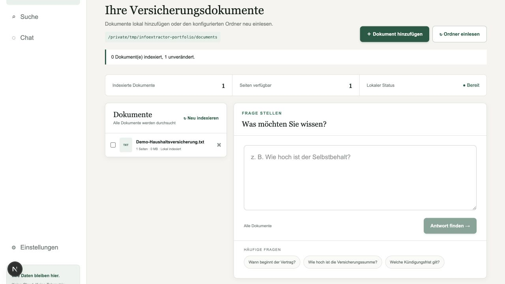
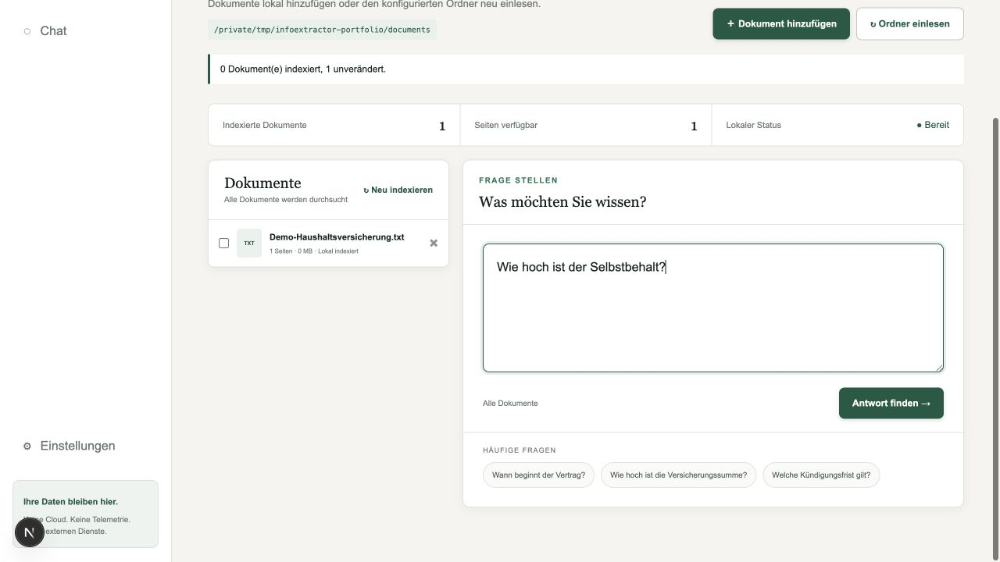
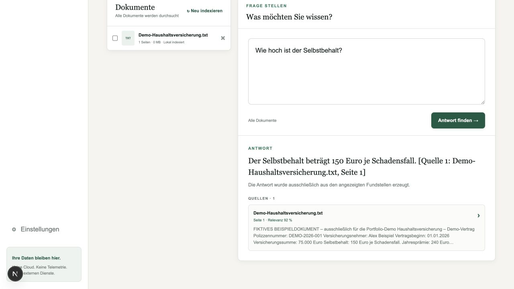
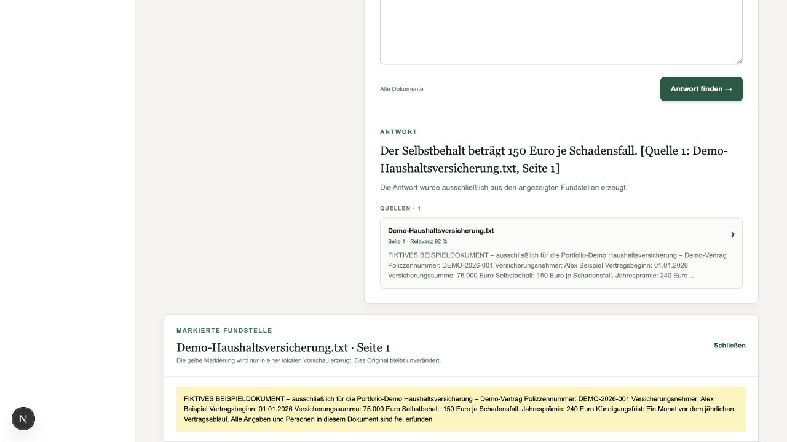

Projektvorstellung · Lokale KI
InfoExtractor
Fragen an Dokumente stellen. Antworten mit der passenden Textstelle finden.
Die Idee dahinter
Informationen in mehreren Dokumenten zu finden, kostet Zeit. InfoExtractor liest PDF-, DOCX- und TXT-Dateien ein und beantwortet Fragen zu ihrem Inhalt. Zu einer Antwort zeigt die Anwendung die Quelldatei und die zugehörige Textstelle, damit sich das Ergebnis nachvollziehen lässt.
Verarbeitung auf dem eigenen Rechner
Die Suche und das Sprachmodell laufen lokal über Ollama. Nach dem Laden der benötigten Modelle ist der Betrieb offline möglich. Diese Seite zeigt den Ablauf anhand echter Bildschirmaufnahmen mit erfundenen Beispieldaten; die Anwendung lässt sich über GitHub lokal einrichten.
Vom Dokument zur Antwort.
Ein Beispiel mit einem fiktiven Versicherungsdokument: Wie hoch ist der Selbstbehalt? Die Bilder lassen sich per Klick in voller Größe öffnen.

Dokumente einlesen
Die Anwendung erfasst die Dateien aus einem festgelegten Ordner und bereitet ihre Inhalte für die Suche vor. Das Beispieldokument erscheint anschließend in der Übersicht.

Eine Frage stellen
Die Frage wird in Alltagssprache eingegeben. InfoExtractor sucht nach passenden Textstellen in den eingelesenen Dokumenten.

Eine Antwort mit Quelle erhalten
Das lokale Sprachmodell formuliert eine Antwort anhand der gefundenen Inhalte. Im Beispiel beträgt der Selbstbehalt 150 Euro je Schadensfall. Die Quelle wird direkt darunter angezeigt.

Die Fundstelle nachlesen
Über die Quellenansicht lässt sich die Antwort mit dem Dokument abgleichen. So bleibt sichtbar, auf welcher Textstelle das Ergebnis beruht.
Ein Blick in den Code
Auf GitHub stehen der Quellcode und die Anleitung zum lokalen Start.